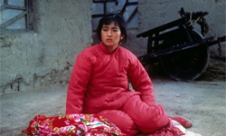
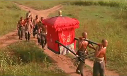
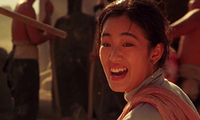
Red Sorghum marked the directorial debut of Zhang Yimou, and the acting debut of film star Gong Li. With its lush and lusty portrayal of peasant life, it immediately elevated Zhang to the forefront of the Fifth Generation directors. Zhang’s and Gong Li’s debut was a testament of what was to follow, with the film earning international acclaim and the Golden Bear award at the Berlin Film Festival. The script is based on the novel “Red Sorghum Clan” by Nobel laureate Mo Yan.
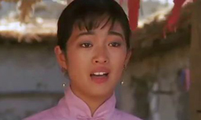
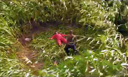
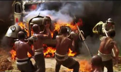
The film takes place in a rural village in China’s eastern province of Shandong, during the Second Sino-Japanese War. Jiu’er (Gong Li) is sent to marry an elderly owner of a distillery. However, the owner dies and the distillery passes to Jiu’er, since he was without an heir. At the same time, a man appears in her life to repeatedly save her, and eventually having something to do with the first batch of liquor produced under her ownership. Eventually, the Imperial Japanese army invades the area and everything changes.
Having worked as a cinematographer before his directorial debut, Zhang focused on that aspect, presenting a number of outstanding frames, which manage to combine visual lyricism with a focus on realism. Through a distinctively melodramatic story, Zhang makes a tribute to the rural people, their everyday lives, and their resistance to the Japanese army. The two parts of the movie, before and after the invasion, are a bit disconnected, but this is the only fault of an impressive debut.
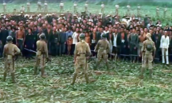
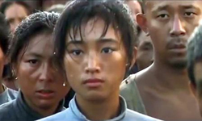
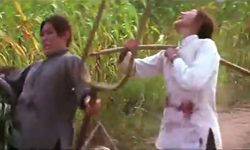
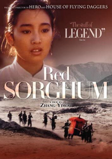
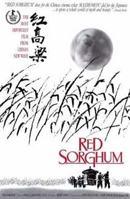
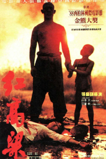
Upon its release, Red Sorghum earned international acclaim, most notably winning the coveted Golden Bear at the 1988 Berlin International Film Festival. Roger Ebert said, in his review and synopsis in the Chicago Sun-Times, "There is a strength in the simplicity of this story, in the almost fairy-tale quality of its images and the shocking suddenness of its violence, that Hollywood in its sophistication has lost."
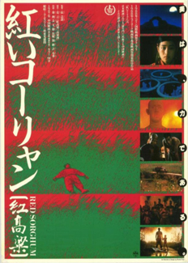
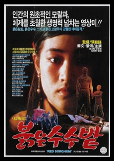
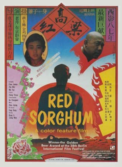